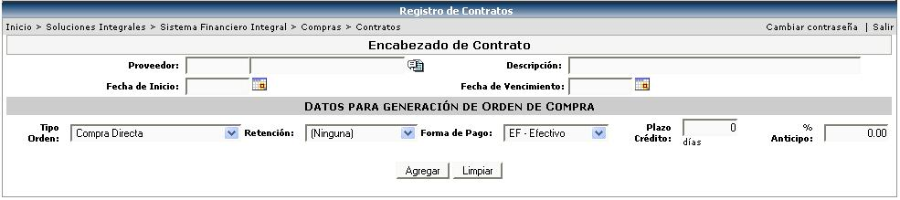
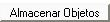

Los contratos son acuerdos que se pactan con ciertos proveedores de la empresa, para que cuando se requiera la compra de un bien o servicio, ésta se le sea otorgada a ese proveedor con el que se tiene contrato. Solamente se pueden hacer contratos para artículos y servicios y mantener con cada uno de estos un único contrato con un proveedor.
Cuando se realiza una solicitud de compra y una o varias líneas del detalle son artículos o servicios que tienen contrato, el sistema automáticamente genera la orden de compra por esas líneas para el proveedor que tiene asignado esos artículos o servicios en el contrato; la orden de compra que se genera depende de las condiciones del contrato, ya que respecta las características de este último.
Es importante mencionar que adicionalmente el sistema asignará la solicitud a un comprador por las líneas que no pertenecen a contratos, para que él realice el proceso normal de Publicación de la Compra y abastecimiento de las líneas requeridas por el solicitante y no incluidas en el contrato.
Se ingresa la información del encabezado del contrato: se escoge el proveedor del contrato, se digita una breve descripción, se digita el rango de fechas en que va a regir ese contrato (fecha inicio/fecha vencimiento). El tipo de orden (formato de impresión a utilizar), seleccionar la retención si aplica, se le asigna la forma de pago, el plazo de crédito en días (que depende de la forma de pago escogida) y si se requiere un anticipo se especifica de forma porcentual.

Posteriormente a la creación del encabezado se debe de crear el detalle del mismo, en donde:
Especificar si es un artículo o un servicio, seleccionar el artículo o el servicio a incluir en contrato, la garantía en días, la moneda del contrato, el precio unitario, descripciones y el impuesto si aplica.
El Botón

que aparece en el encabezado del contrato, sirve para adjuntar fotografías o archivos de texto, que sirvan como anexo a las especificaciones del contrato. La siguiente pantalla es la que se muestra al presionar el botón: